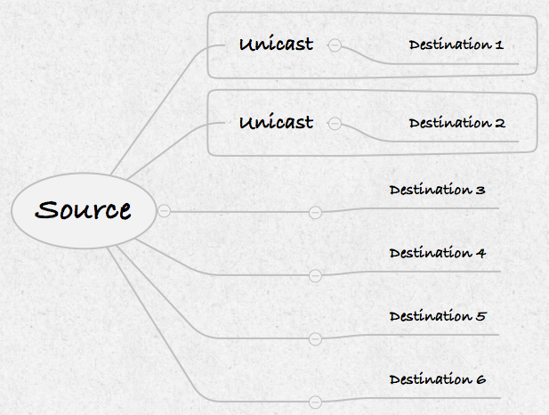
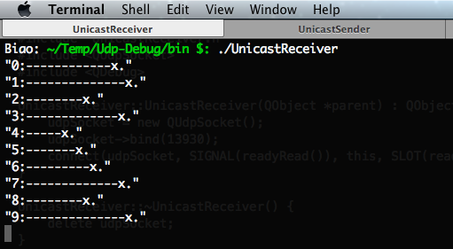
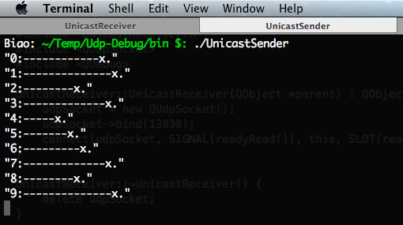

使用 Unicast 的时候，Source 一次只能给一个 Destination 发送消息，不能同时发给多个 Destination，如果 Source 要给多个 Destination 发一条内容相同的消息，就必须单独地分别给每个 Destination 发送这条消息。
如图，Source 要给 Destination 1 和 Destination 2 使用 Unicast 发消息，Source 只能给 Destination 1 发一个消息，然后再给 Destination 2 发一个消息。

虽然我们的 Source 和 Destination 是在同一个局域网里，但是需要记住，Unicast 的消息发送方 Source 和接收方 Destination 可以分别在不同的网络里，不一定要在同一个局域网里。
Unicast 的消息发送程序 调用 udpSocket->writeDatagram(data.toUtf8(), QHostAddress::LocalHost, 13930) 发送 Unicast 消息：
第一个参数 data.toUtf8() 是消息的内容，为字节数组
第二个参数 QHostAddress::LocalHost 为接收消息的程序所在电脑的地址。示例中由于接收消息的程序和发送消息的程序都是在同一台电脑上，所以用 QHostAddress::LocalHost，其等价于 127.0.0.1
第三个参数 13930 为接收消息程序的端口号
1 2 3 4 5 6 7 8 9 10 11 12 13 14 15 16 17 18 19 20 21 22 23 24 25 26 27 28 29 30 31 32 33 34 35 36 #include <QCoreApplication> #include <QUdpSocket> #include <QDebug> QString generateMessage (int sn, char symbol) ;int main (int argc, char *argv[]) QCoreApplication a (argc, argv) ; QUdpSocket *udpSocket = new QUdpSocket (); int messageCount = 10 ; for (int i = 0 ; i < messageCount; ++i) { QString data = generateMessage (i, '*' ); udpSocket->writeDatagram (data.toUtf8 (), QHostAddress::LocalHost, 13930 ); qDebug () << data; } return a.exec (); } QString generateMessage (int sn, char symbol) { QString str; str.fill (symbol, qrand () % 10 + 5 ); str.prepend (QString::number (sn) + ":" ); str.append ("x." ); return str; }
Unicast 的消息接收程序 接收 Unicast 消息的流程如下：
调用 udpSocket->bind(13930, QUdpSocket::DontShareAddress) 进行监听端口 13930
当有消息到达，udpSocket 就会发送信号 readyRead()
然后槽函数 readPendingDatagrams() 被自动调用
udpSocket->readDatagram(datagram.data(), datagram.size()) 读取消息
读取到的消息是字节数组，根据消息的写入规则解析出消息。发送的是 QString 的 UTF-8 字节数组，所以解析的时候用 QString::fromUtf8(datagram)
1 2 3 4 5 6 7 8 9 10 11 12 13 14 15 16 17 18 19 20 21 22 #ifndef UNICASTRECEIVER_H #define UNICASTRECEIVER_H #include <QObject> class QUdpSocket ;class UnicastReceiver :public QObject { Q_OBJECT public : explicit UnicastReceiver (QObject *parent = 0 ) ~UnicastReceiver (); private slots: void readPendingDatagrams () private : QUdpSocket *udpSocket; }; #endif
1 2 3 4 5 6 7 8 9 10 11 12 13 14 15 16 17 18 19 20 21 22 23 24 25 26 27 28 #include "UnicastReceiver.h" #include <QUdpSocket> #include <QDebug> UnicastReceiver::UnicastReceiver (QObject *parent) : QObject (parent) { udpSocket = new QUdpSocket (); udpSocket->bind (13930 , QUdpSocket::DontShareAddress); connect (udpSocket, SIGNAL (readyRead ()), this , SLOT (readPendingDatagrams ())); } UnicastReceiver::~UnicastReceiver () { delete udpSocket; } void UnicastReceiver::readPendingDatagrams () while (udpSocket->hasPendingDatagrams ()) { QByteArray datagram; datagram.resize (udpSocket->pendingDatagramSize ()); udpSocket->readDatagram (datagram.data (), datagram.size ()); qDebug () << QString::fromUtf8 (datagram); } }
1 2 3 4 5 6 7 8 9 #include <QCoreApplication> #include "UnicastReceiver.h" int main (int argc, char *argv[]) QCoreApplication a (argc, argv) ; UnicastReceiver receiver; return a.exec (); }
先执行消息接收程序 
然后执行消息发送程序 
可以看到，发送的 10 条消息都被接收到了（消息也有可能丢失，应为 UDP 是不可靠的协议）